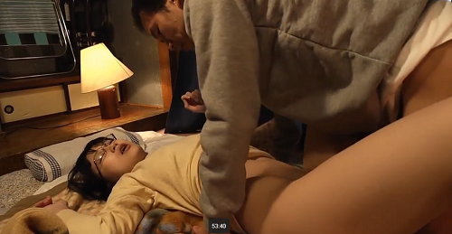

Phần 1
Con Mọt không kịp né lánh nên đành phải chạm mặt chú Phẻng ở đầu ngõ. Con nhỏ xẻn lẻn thấy tội. Đã vậy còn bị thằng cha già dịch hỏi xấn xổ : mí pửa lị ti tâu, hổn sang pên ngộ. Con Mọt ấp úng mãi mới xón ra được câu đáp : tại má hổng cho ra đường.
Chú Phẻng gãi cái ót như bị chí cắn, tắc tắc lưỡi hít hà : hấy à, má lị khó óa, con lít mà giữ chẹt ở nhà. Con Mọt mắc cỡ muốn chết nên đặt điều ra vậy, chớ kỳ thiệt nó trốn chú thấy mồ tổ. Bây giờ nghĩ tới nó còn muốn độn thổ nữa là. Thằng cha coi vậy mà dê ứ.
Cái bữa lâu lắc đó, má nó đi đâu dình dang hổng dìa. Con Mọt đói bụng, tha thẩn đi ra đi vào chờ nóng ruột. Nó lục trong bếp, hổng còn gì ăn đỡ, má nó nói đi chút mà ở chi ở dữ. Hồi này nghe đâu bả có bồ, ôi ba thứ dính lăng nhăng vô thì gỡ hoài hổng hết. Nó thấy má nó lỏn lẻn dồi hương dặm phấn, mặt hớn hở làm sao. Dính hơi đàn ông, mấy bà coi bộ phấn chấn kịch liệt.

Con nhỏ đói meo, phải la cà đi cho quên cơn vật vã trong ruột. Làng xàng sao sang bên chú Phẻng hồi nào hổng hay. Chú thấy con nhỏ lấp ló thì hỏi sảng : nị sao dị. Con Mọt lắc lắc đầu, chú Phẻng coi mòi để ý : pịn hả. Con nhỏ lại lắc nữa, chú nạt : có gì lói ngộ mới piết, nị câm thì ngộ hỉu làm sao. Chưa gì chú đã xổ toet : tỉu nà ma.
Con Mọt rị hợm mãi mới thú nhận : tui đói, chú à. Má đi lâu quá nên chưa có gì ăn. Chú Phẻng chép miệng bừa bãi : lói thì la lói, nị để trong pụng, lỡ xỉu làm sao, tỉu nà ma. Mỗi lần mở miệng, chú đều chêm cái tiếng “ tỉu “ gì đó như gọi tên người thân của chú.
Nói vậy rồi chú lăng xăng rủ : dô li, dô li, chờ ngộ lấy cho ăn. Con nhỏ mừng hết lớn, vô liền, chú dọn ê hề, những món mà nó nằm mơ cũng hổng thấy. Nó ăn nhồm nhoàm, chú Phẻng dòm không chớp. Chừng no cành mới chịu ngưng, chú còn hối : nị ăn lửa ti, ăn cho lo, tể tói.
Con Mọt cám ơn rối rít, chú phủi tay lia lịa : từng mà, hổn có gì, ngộ giúp nị, pửa nào nị giúp ngộ lại, pà con hết. Chú cười khề khà thoải mái. Con Mọt rục rịch muốn đi ra. Chợt nghe chú Phẻng la um : chit cha ngộ dồi, nị lói tùm lum làm ngộ quính, ngộ lí mệ cái tô cơm thiu để nị ăn, đao pụn chết mẹ.
Con Mọt nghe tảng hồn nên hỏi mau mắn : làm sao bây giờ. Chú Phẻng nói : nị phải ở li, chờ coi có đao pụn hôn. Nó nín thở dõi nghe, lâu lâu thấy chột rột trong bụng. Chú Phẻng chừng cũng chia xẻ sự lo toan với nó. Chú gãi đầu gãi tai miết, cằn nhằn : pậy pạ lớ, tỉu nà ma, ngộ uên hết trơn. Hầy tại nị làm ngộ lộn xộn.
Con Mọt xửng không hiểu gì nên ngẩn tò te. Chú Phẻng lâu lâu lại hỏi : có sao hôn, có sao hôn. Con nhỏ lắng nghe rồi nói ấp úng : tui nghe nó kêu ột ột như xình hơi. Chú Phẻng lăng xăng như gà mắc đẻ : lúng dồi, ló pắt tầu hành nị, để ngộ coi ra sao. Chưa gì lão đã tỉnh bơ kéo con nhỏ sát lại và úp tai chỗ bụng bên ngoài áo nghe cho tỏ.
Con nhỏ nhột nhạt cách gì, nhưng ngặt sợ bịnh nên cố đứng yên. Chú Phẻng lình xình nghe mà chắc lưỡi cầm canh : ngộ hổn nghe tược gì hít, cái áo nị dầy qua, ngộ hổn piết. Con Mọt phải tỏ ý xin vén vạt áo lên nhờ chú nghe coi. Chú Phẻng mừng rơn, song còn đưa đà : hổng lên, nị con gái, ngộ ôn già, ai dòm tưởng ngộ ái nị. Con Mọt nôn quá nên nói vô : hổng sao đâu, tui đồng ý mà.
Con Mọt vach đưa bụng, chú Phẻng chắc lưỡi một cái : hầy lớ, nhìu chiện óa, tể ngộ thử coi. Lão áp tai vô, da bụng con Mọt mát rượi, lão lim dim con mắt chết giấc. Lão đưa tay bợ lấy phía sau lưng con nhỏ kéo sáp vô thêm : hầy ngộ nghe nó kêu ộp ộp như con cóc, ớn quá.
Con Mọt chết khiếp nên năn nỉ hỏi : làm sao bây giờ. Chú phẻng cắt nghĩa : thì ngộ lí dầu tha chớ. Con nhỏ hối lia chia. Chú Phẻng lạch phạch chạy đi và đem chai dầu cù là tới. Chú phết một cục tổ chảng rồi áp vô cái rún con nhỏ mà dện kín mít. Ngón tay chú như đuôi con thằn lằn ngoáy chột chết cha, con Mọt phải nín tựa nín đái.
Chú phết vòng vòng, cà lên cái vành rún và lan lan ra xung quanh. Con Mọt hỏi cầm canh : rồi chưa. Chú Phẻng lại biểu nó : nị tể ngộ làm chớ, hỏi hoài ngộ vên hết chụi. Chú tha khắp vùng, cái cùi tay chú giặm lình xình nơi cạp quần làm con Mọt lấn cấn. Rồi nó nghe chú nói : hầy lớ, ngộ phải bôi nhìu nhìu tể ló hổng nhảy lan, nị chịu khó.
Con Mọt đành ưng. Chú đòi con nhỏ kéo xệ quần xuống cho bôi dầu phía dưới bụng. Tay chú rà rà nhột ê càng. Bây giờ dầu thấm nên nóng ran, con nhỏ xịch xạng hết biết. Chú Phẻng dụ khị nó từ từ : nị tể ngộ pôi lên trên một chút cho thấm hết chỗ. Con nhỏ lúng túng rồi cũng phải nghe. Nó đằn vạt áo chỉ cho phép chú thọc tay bôi bên trong thôi. Chú Phẻng cũng chỉ cần có vậy, nôn nóng bể chuyện hết.
Chú xoa lần xần giữa ức con nhỏ, nhận ra hổng có áo lót gì hết. Chú mừng thấy mồ nên chà thật sát. Con nhỏ nghe rần rần nên buông thả lung, nó lơ đãng theo cái nỗi chộn rộn đang xe xe trên da thịt nó. Chú Phẻng coi bộ làm cẩn thận, chú rà rà miết nơi mấy cái xương nổi lù lù ở ức, con Mọt thấy lâng lâng chi đâu. Chú xàng xê nới rộng vòng bôi nên có lần đụng nhẹ vô cái cục mềm mềm gì đó.
Chú biết thừa là đụng vú con Mọt, nhưng làm như không biết. Còn con Mọt hồi nào tới giờ giữ cặp vú có để ai đụng vô đâu nên vẫn dáng thơ ngây. Cái nóng ở rún và bụng đã lắt lay, giờ chỗ ức và dưới bầu vú cũng nóng ran nên mặt con Mọt đỏ lự. Chú Phẻng tỉ tê nói với nó : hầy à, nị pịn dồi, mặt nị tỏ pừn, chit cha, ngộ pậy pạ hại nị, tỉu nà ma.
Con Mọt quính lên : rồi làm sao chú. Chú khề khà : nị tể ngộ từ từ, đừng làm ngộ quính. Chẳng hỏi hỏi han, chú lật phéng áo con nhỏ lên. Chèn ơi, hai bầu vú con Mọt thu lu như trái xoài non. Chú nuốt nước miếng cái ực la chói lói : sao nị lóng dữ dậy, chit cha nị pịn thiệt rồi. Chú ùm ùm bóp lên hai vú nó như bắt tà ma ám khí gì ở đó. Cặp vú con nhỏ xịch xạc trong bàn tay chú, vỉnh lên vỉnh xuống. Chú dồn một cục, quăng vặt tưng tưng, cắt nghĩa cho con Mọt nghe : ngộ chặn cái gió để thảy nó ti cho nị phẻ.
Con Mọt còn biết nói năng gì, chỉ lo bịnh không giảm về má chửi chết. Chú Phẻng tung hứng hai vú nó đã đời thì kê miệng vô nút chùn chụt từng đầu vú, kêu để mút nọc gió ra. Thằng cha nút thì nút còn bóp vặt cái vú kia làm con nhỏ tức rực ngực. Không ai khảo, chú cũng khai : dú nị nhễm gió nhìu óa, chịu khó tể ngộ mút nặn cho tịt, tỉu nà ma, pậy hết sức.
Chú bóp nút mà còn liếc chừng, thấy con Mọt lim dim mắt, chú yên chí nên càng bú và măn dữ. Hai vú con nhỏ tầy huầy như bao bột bị vo xịt xịt, cái núm lắc lẻo phình tới phình lui. Chú Phẻng thè lưỡi liếm làm nó vừa săn vừa bóng nhẫy. Chú bóp chặt chịa nên núm vú căng cớn lên, chú tha còn hơn phết dầu cù là lên đầu vú.
Con Mọt căng mình, cái thứ gì trôi lình phình trong khắp người nó. Hồn nó lạc lõng mất tiêu, quáng quàng tựa bị ai xâu ai xé rách beng hết thảy. Chú phẻng trúng mánh được bóp bú vú con nhỏ tình tang thì trổ hết ngón nghề ra làm cho nó sướng. Chú mút và bóp, chớ một bàn tay đã thò xuống xoa bên ngoài quần con nhỏ tự đời nào rồi.
Con nhỏ bị chèo kéo ở trên lại cảm giác bị mò ở dưới nên liêu xiêu vật vã. Giờ chú Phẻng chẳng cần hỏi han gì, cứ tự tiện làm như ý chú muốn. Chú nút vú con Mọt và lòn tay vô bóp lồn nó băng băng. Con nhỏ đứng nghiêng một bên, một vú bị bóp, một vú bị ngậm mà cái lồn thì cũng đang xịch xụi bị mò.
Chú Phẻng phải lò đâu ra dưới cánh tay con nhỏ để giữ nó khỏi té và lùm xùm vọc con bé chết lên chết xuống. Lần đầu con nhỏ biết sướng là sao nên bắt run, lâu lâu lại nghe ở dưới trào ra thứ nước ấm ấm. Nhận ra mới hay chú Phẻng đang thọc ngón tay vô mò ở trỏng. Con nhỏ thốn dữ phải nạnh chưn lên để dễ chịu.
Chú Phẻng coi lồn nó như cái bánh bẻng hay cái nấm rơm gì không bằng. Chú búng tách tách lại trải kéo ra, như người thử da bò hay phơi đằn lá làm con nhỏ châng lâng, lúc vun vút lên mây, lúc giùng giùng đổ xuống. Dù quần chua bị lột mà con Mọt nghe ướt bết bát, e chừng nó rơi tong tỏng xuống quần lấm lem cũng nên. Nó phải la : rồi chưa chú, tui mệt lắm rồi, chú khiến tui đái ướt mem, chút về má đánh nặng.
Chú Phẻng còn ráng nhử : nị tể ngộ lo mà, lừng hối ngộ. Lão vội móc sâu ngón tay vô xục làm con Mọt chới với nhảy tưng tưng. Cái lồn chè bè ra, lúc xúc kịch liệt, con nhỏ kêu re ré, búng giò lắc lư kêu oang oang : chết tui, chú, gì mà nứng dữ tợn. Chú xúc bể lồn tui ra còn gì, bụm bụm thôi. Chú Phẻng nào còn đầu óc gì mà nương nhẹ, chú xục phành phành, con Mọt rú lên như bị bù cạp cắn. Nó chà lết và nhún đẩy cái lồn pưng pưng, nước ọc kêu ót ót.
Cũng may, lần đó chú Phẻng chỉ bóp bú vú và móc lồn nó thôi mà nó đã xật xừ chết tổ. Chú có gạ nó để chú nhét chim vô cho nó sướng ngất mà nó không nghe, vì thấy lâu chắc má đã về. Nó bỏ chạy rột đi, tay còn giữ kéo quần, che áo. Chú Phẻng nhìn theo tiếc hùi hụi.
(Hết Phần 1 … Xin mời đón xem tiếp Phần 2)